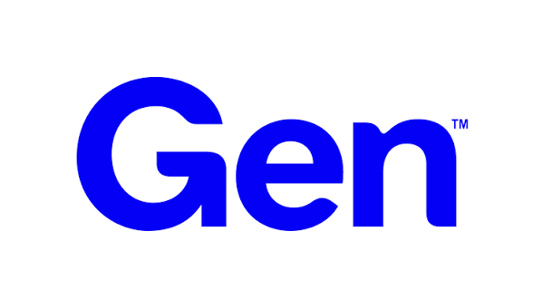

Sales Operations & Enablement Intern
Gen Digital · United States
Validated the data integrity behind a new Salesforce scoring system and designed an AI readiness framework to help Sales leadership prioritize deals for Legal and Finance review.